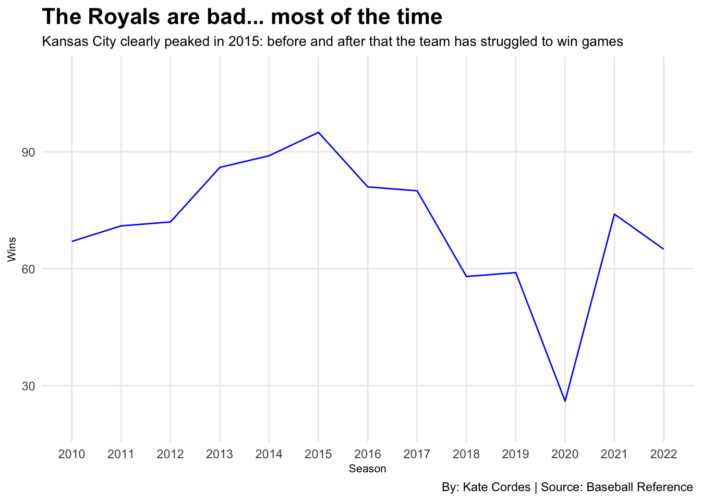
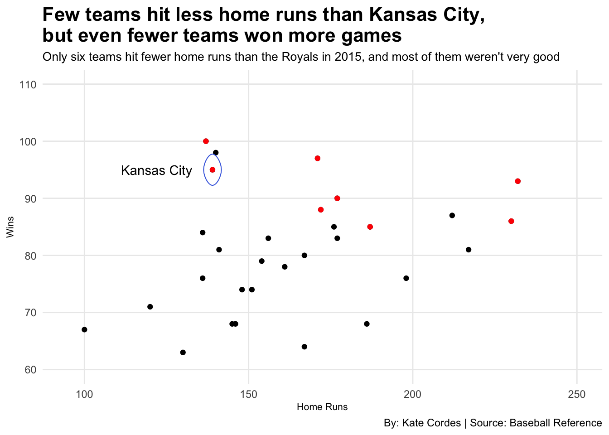
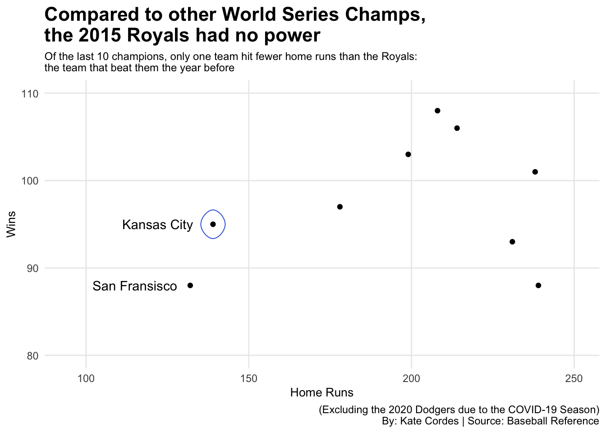
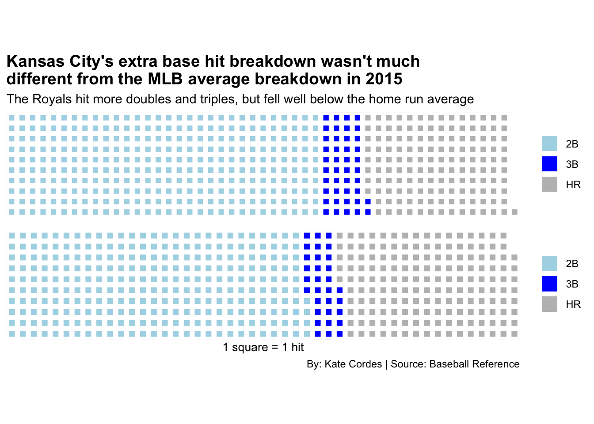
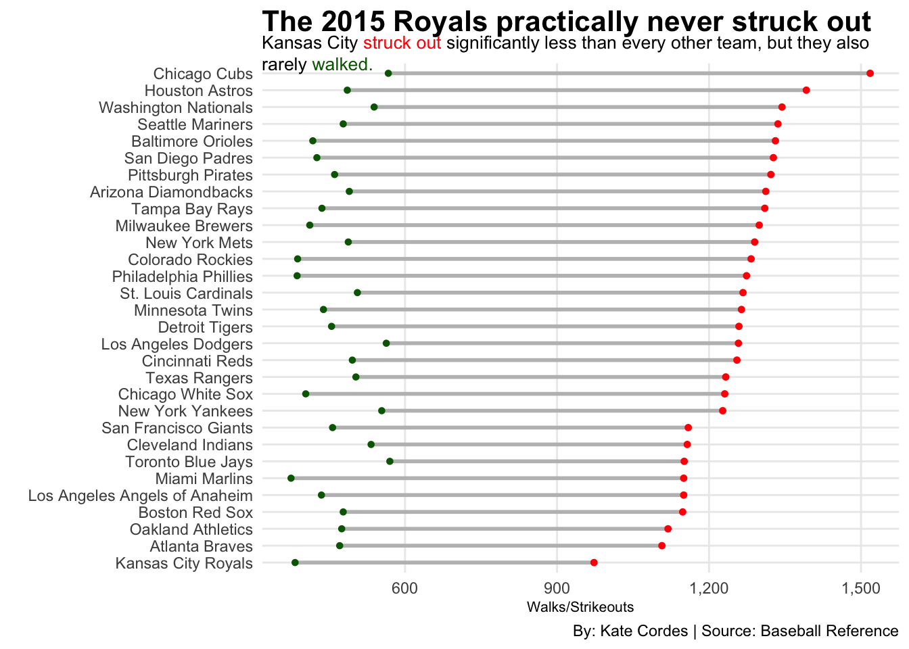

The 2015 Kansas City Royals: World Champs, Not Batting Champs
baseball
royals
mlb
Author
Kate Cordes
Published
April 16, 2023
The 2015 Kansas City Royals were an unusual team, to say the least. When the team made their wild playoff run deep into the 2014 playoffs, many fans and critics deemed it a fluke. When they made a second consecutive appearance in the 2015 World Series, which they won, many doubters had to reevaluate this claim.
Much to the shagrin of Royals fans, it made sense for people to assume the Royals would revert back to their mediocre ways after their 2014 season. They’re a small market team that can’t afford to buy big bats and powerful arms every year. They are an organization that meticulously plans for years for a season or two of glory. Luckily for the Royals, all this planning, combined with their unique style of play, paid off with a 2015 championship.
Statistically, Kansas City is usually a pretty bad team. Since 2004, the team has only experienced four winning seasons. That’s four out of 20 seasons, which is not very good.
Code
library(tidyverse)library(ggalt)library(waffle)library(ggtext)library(gt)mlb<-read_csv("data/2015TeamData.csv")Royals2010 <-read.csv("data/RoyalsSince2010.csv")ggplot() +geom_line(data = Royals2010, aes(x = Season, y = Wins, group = Tm), color ="blue") +scale_y_continuous(limits =c(20,110)) +scale_x_continuous(breaks=c(2010:2022))+labs(y ="Wins", title ="The Royals are bad... most of the time",subtitle ="Kansas City clearly peaked in 2015: before and after that the team has struggled to win games",caption ="By: Kate Cordes | Source: Baseball Reference") +theme_minimal() +theme(plot.title =element_text(size =16, face ="bold"),plot.subtitle =element_text(size =10),axis.title =element_text(size =8),panel.grid.minor =element_blank() )

Code
ggsave("image.png")
As the above plot depicts, the Royals hit their peak in 2015, and although they had experienced a gradual increase in number of wins leading up to this point, something about this team was clearly different. So what had changed? Let’s take a look at some offensive statistics from 2015 compared to Kansas City averages since 2010.
Code
averagehits<- Royals2010 %>%summarise(avghits =mean(H))averagedoubles <- Royals2010 %>%summarise(avgdoubles =mean(X2B))averagetriples <- Royals2010 %>%summarise(avgtriples =mean(X3B))averagehomeruns <- Royals2010 %>%summarise(avghr =mean(HR))averagestolenbases <- Royals2010 %>%summarise(avgsb =mean(SB))averagewalks <- Royals2010 %>%summarise(avgbb =mean(BB))averageruns <- Royals2010 %>%summarise(avgr =mean(R))averageso <- Royals2010 %>%summarise(avgso =mean(SO))KCAvg <-read_csv("data/KCAvg.csv") KCCompare <- KCAvg %>%mutate_at(vars(-Team), as.numeric) %>%group_by(Team) %>%tibble()KCCompare %>%gt() %>%cols_label(SO ="Strikeouts",BB ="Walks",X2B ="Doubles",X3B ="Triples",HR ="Home Runs",SB ="Stolen Bases" ) %>%tab_header(title ="KC did almost everything slightly better in 2015 ",subtitle ="The Royals improved upon their average on every front besides stolen bases in 2015" ) %>%tab_style(style =cell_text(color ="black", weight ="bold", align ="left"),locations =cells_title("title") ) %>%tab_style(style =cell_text(color ="black", align ="left"),locations =cells_title("subtitle") ) %>%tab_source_note(source_note =md("By: Kate Cordes | Source: Baseball Reference") ) %>%tab_style(locations =cells_column_labels(columns =everything()),style =list(cell_borders(sides ="bottom", weight =px(3)),cell_text(weight ="bold", size=12) ) ) %>%opt_row_striping() %>%opt_table_lines("none")%>%tab_style(style =list(cell_fill(color ="royalblue"),cell_text(color ="white") ),locations =cells_body(rows = Team =="Kansas City 2015"))
KC did almost everything slightly better in 2015
The Royals improved upon their average on every front besides stolen bases in 2015
Team
Wins
Hits
Runs
Strikeouts
Walks
Doubles
Triples
Home Runs
Stolen Bases
Kansas City 2015
95.000
1497.000
724
973.000
383.0000
300.0000
42.00000
139.0000
104.0000
KC Averages
66.308
1364.231
645
1086.615
117.9231
263.2308
31.84615
134.8462
117.9231
By: Kate Cordes | Source: Baseball Reference
The most noteable difference between the two rows of the table is found in the win column. The Royals won almost 30 games above their team average over the past 13 seasons. That is a lot, especially for a team who only wins 65 games each year.
It is importnat to note that this data containing the Royals’ averages is slightly skewed, as it contains data from the shortened 2022 season when the Royals only played 60 games. This shrinks the sample size for all other categories as well, meaning the team had less hits, wins, home runs and so on because they had less opportunities overall.
Clearly, the Royals hit better in 2015 than in previous and subsequent seasons. They racked up more hits, runs and extra base hits. However, they only hit five more home runs in 2015 than their average. It seemed like power increased based on the increase in extra base hits. However, this may not be the case.
The 2015 Royals are most often associated with their never-say-die attitude and their scrappy play style. They are known for taking the extra base and stealing a bag or two each game. Because they couldn’t afford to pay huge power hitters, each bag was precious. Utilizing their speed and aggression, they never took a base for granted.
This could be one reason the number of extra base hits increased in 2015. They did not necessarily hit the ball any harder. They were just aggressive on the base paths, stretching singles into doubles and doubles into triples. Aggression on the base paths was characteristic of this 2015 championship team, but interestingly the 2015 Royals had about 13 fewer stolen bases in 2015 compared to the average since 2010.
There are a few factors that play might play into this. The Royals were getting to second more often by putting the ball in play than in other seasons, so they didn’t need to steal a bag to get to get into scoring position. Additionally, third base is harder to steal than second base. If the Royals were starting out on second base to start more often, they would have less opportunites to steal second. Because stealing third is more risky, there would be less enticement to steal that bag. Additionally, the offense was better overall in this season, so runners were able to better trust the guy at the plate to hit them home.
While we know that, in general, the Royals offense was at its peak this season, their power was not. The table above shows that the Royals hit 139 home runs in 2015. Without context, that means nothing. We need to compare this statistic to the other MLB teams to understand how bizarre it was for the Royals to hit so few home runs and win so many games.
Code
KC <- mlb %>%filter(Tm =="Kansas City Royals")playoffs<-c("New York Mets", "Chicago Cubs", "Los Angeles Dodgers", "St. Louis Cardinals", "Texas Rangers", "Houston Astros", "Toronto Blue Jays", "Kansas City Royals") postseason <- mlb %>%filter(Tm %in% playoffs)ggplot() +geom_point(data = mlb, aes(x = HR, y = W)) +geom_point(data=postseason, aes(x = HR, y = W), color="red") +geom_encircle(data = KC, aes(x = HR, y = W), s_shape =0, expand =-0.15, color ="royalblue")+geom_text(aes(x =122, y =95, label ="Kansas City")) +labs(title ="Few teams hit less home runs than Kansas City,but even fewer teams won more games",subtitle ="Only six teams hit fewer home runs than the Royals in 2015, and most of them weren't very good",x ="Home Runs", y ="Wins",caption ="By: Kate Cordes | Source: Baseball Reference") +scale_x_continuous(limits =c(95,250)) +scale_y_continuous(limits=c(60, 110))+theme_minimal() +theme(plot.title =element_text(size =16, face ="bold"),axis.title =element_text(size =8),plot.subtitle =element_text(size =10),panel.grid.minor =element_blank() )

The chart above shows each team in the MLB from 2015. The relationship between home runs and games won is depicted. The closer a team is to the top, the more wins they had. The closer a team is to the right, the more home runs they hit. Typically, the further a team is to the right, the higher up they fall on the chart, as well. This means their is a moderate positive relationship between home runs and wins.
Basically, this means, generally, the more home runs a team hits, the more games they win.
Naturally, there are a few outliers, Kansas City being one. There were only six teams to hit fewer home runs than they did. Excluding St. Louis, who made the postseason, none of these teams reached 85 wins. We can’t say that the Royals broke the “home run leading to wins” rule, because there isn’t one. However, we can say it is unusual for a team with such little power o have such great success.
This becomes even more apparent when we look at this same relationship for the last 10 World Series champion teams.
Code
Last10Champs <-read.csv("data/Last10Champs.csv")KC <- Last10Champs %>%filter(Tm=="Kansas City Royals")ggplot() +geom_point(data = Last10Champs, aes(x = HR, y = Wins)) +geom_encircle(data = KC, aes(x = HR, y = Wins), s_shape =0, expand =-0.15, color ="royalblue")+geom_text(aes(x =122, y =95, label ="Kansas City")) +geom_text(aes(x=115, y =88, label ="San Fransisco")) +labs(title ="Compared to other World Series Champs, the 2015 Royals had no power",subtitle ="Of the last 10 champions, only one team hit fewer home runs than the Royals: the team that beat them the year before",x ="Home Runs", y ="Wins",caption ="(Excluding the 2020 Dodgers due to the COVID-19 Season) By: Kate Cordes | Source: Baseball Reference" ) +scale_x_continuous(limits =c(95,250)) +scale_y_continuous(limits=c(80, 110))+theme_minimal() +theme(plot.title =element_text(size =16, face ="bold"),axis.title =element_text(size =10),plot.subtitle =element_text(size =9),panel.grid.minor =element_blank() )

Again, Kansas City is not in a league of its own, as the 2014 San Fransisco Giants actually hit fewer home runs than the Royals in their championship year. However, these two teams are far removed from the rest of the pack.
As the MLB moves farther away from small ball and becomes increasingly interested in exit velocity and launch angle, one might wonder if teams like the Royals and Giants will be left in the past.
Since the Royals hit so few home runs, looking at their offensive breakdown compared to the rest of the MLB might give some insight into how the Royals achieved their success. A vast majority of the Royals’ MLB leading 1,497 hits were singles (1,061). We will look at the breakdown of extra base hits.
Code
averagehits<- mlb %>%summarise(avghits =mean(H))averagedoubles <- mlb %>%summarise(avgdoubles =mean(`2B`))averagetriples <- mlb %>%summarise(avgtriples =mean(`3B`))averagehomeruns <- mlb %>%summarise(avghr =mean(HR))##creating a dataframe for breakdown of hits for RoyalsKC<-c("2B"=300, "3B"=42, "HR"=139) #creating a dataframe for MLB Averagemlbaverage <-c("2B"=274, "3B"=31, "HR"=163) ##creating a waffle chartiron(waffle( KC,rows =10,colors=c("light blue", "blue", "grey") ) +labs(title ="Kansas City's extra base hit breakdown wasn't much different from the MLB average breakdown in 2015",subtitle ="The Royals hit more doubles and triples, but fell well below the home run average" ) +theme(plot.title =element_text(size =14, face ="bold"),axis.title =element_text(size =8),axis.title.y =element_blank() ),waffle( mlbaverage,rows =10, colors=c("light blue", "blue", "grey") )+labs(x ="1 square = 1 hit",captions ="By: Kate Cordes | Source: Baseball Reference"))

As the chart depicts, the Royals had about the same amount of extra base hits as the rest of the MLB, hitting 13 extra base hits above the league average. They hit more doubles and triples, but hit significantly fewer home runs: 24 below average.
Although Kansas City hit more extra base hits than the average team, this didn’t mean they had more power. As previously noted, they had more aggression and speed on the base paths.
Remember that the Royals stolen bases were down in 2015 for several reasons? Their 104 stolen bases was still 20.5 bases more than the league average of 83.5. That’s not so bad for an “off year.”
Not only were the Royals extremely aggressive on the base paths, they also had an aggressive approach at the plate that was unmatched by other teams. This is made apparent by analyzing the rate at which the Royals struck out and walked.
Code
ggplot() +geom_dumbbell(data = mlb,aes(y =reorder(Tm, SO), x = BB, xend = SO),size =1,colour ="grey",colour_x ="darkgreen",colour_xend ="red") +scale_x_continuous(labels = scales::comma)+labs(title="The 2015 Royals practically never struck out",subtitle ="Kansas City <span style = 'color:red;'>struck out</span> significantly less than every other team, but they also rarely <span style = 'color:darkgreen;'>walked.</span>",y ="", x ="Walks/Strikeouts",caption ="By: Kate Cordes | Source: Baseball Reference" ) +theme_minimal() +theme(plot.title =element_text(size =16, face ="bold"),plot.subtitle =element_textbox_simple(size =10),axis.title =element_text(size =8),panel.grid.minor =element_blank() )

The Royals rarely struck out. They recorded 973 strike outs in 2015. The Atlanta Braves, who recorded the second fewest strikeouts in the league, struck out 1,107 times throughout the season. So did the Royals just not swing the bat?
That was definitely not the case, as we have already established that Kansas City led the league in hits. We know they liked to swing the bat because they rarely walked. Only one team walked less times. The Miami Marlins walked eight fewer times that the Royals.
So the Royals didn’t hit home runs, they didn’t walk and they practically never struck out. That’s a combination that does not happen very often. So, how did they win? The Royals put the ball in play, took advantage of extra bases and pitched extremely well.
This analysis doesn’t cover the other half of the game at all. Instead it serves as a sample for why the Royals were truly an offensive enigma. Since the statcast era began, teams have moved increasingly farther away from this style of play. It is not too far-fetched to believe there may never be another World Series Champion team like the 2015 Kansas City Royals.